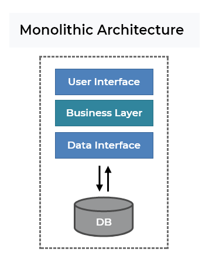

With the development of cloud computing, companies are migrating from traditional monolithic systems to microservices architecture. This novel solution, even though being very powerful, still has its own limitations and as any other kind of architectures, should not be considered as an one-for-all answer for all kinds of applications.
II. THEORETICAL BACKGROUND
1. Monolithic architecture

Monolithic architecture common diagram
"A monolithic architecture is a traditional model of a software program, which is built as a unified unit that is self-contained and independent from other applications. The word “monolith” is often attributed to something large and glacial, which isn’t far from the truth of a monolith architecture for software design. A monolithic architecture is a singular, large computing network with one code base that couples all of the business concerns together. To make a change to this sort of application requires updating the entire stack by accessing the code base and building and deploying an updated version of the service-side interface. This makes updates restrictive and time-consuming."
"The monolithic architecture is considered to be a traditional way of building applications. A monolithic application is built as a single and indivisible unit. Usually, such a solution comprises a client-side user interface, a server side-application, and a database. It is unified and all the functions are managed and served in one place."
=> Main points about monolithic architecture and monolithic applications:
- Monolithic architecture is considered to be the traditional way to build applications.
- An application is built as a single unit.
- All functionalities are developed in a single codebase and they are usually tightly coupled.
2. Microservices
A common diagram for microservice architecture
"Microservices are an architectural and organizational approach to software development where software is composed of small independent services that communicate over well-defined APIs. These services are owned by small, self-contained teams."
"Microservices are an architectural approach to building applications. As an architectural framework, microservices are distributed and loosely coupled, so one team’s changes won’t break the entire app. The benefit to using microservices is that development teams are able to rapidly build new components of apps to meet changing business needs"
- A system is now composed of multiple small independent services that communicate over well-defined APIs
- Each microservice can be developed by a small team.
- Microservices in a system are loosely coupled
III. PRACTICAL EXPERIENCE
For the past few years, I have participated in several projects that use those architectures. Even though my experience is not as much as any senior developers, I still believe that it can be helpful at least for my own and hopefully it can help anyone who reads this article.
1. Monolithic architecture
Every projects I participated in that used monolithic architecture are classroom-level, but they still give me some invaluable experience.
For the first project, my team and I developed an application that visualize graph algorithms:
UIUse Case Diagram
This application did not require any database to run, so it was still fine for us to put everything in one single codebase and got away with it. The whole project was written in Java, so the User Interface was not very fancy, but the app worked.
The honeymoon with monolithic architecture ended when I participated in the second project - still classroom-level, but for this one we needed to use a database and a friendly UI, and this time, things were messy.
Our naive team did what IT college students usually do when they do a project at the university: Bundle everything in one single codebase - Frontend, Backend, Authentication,... EVERYTHING! and we took system designing process for granted
2. Microservices
Life with monolithic architecture was hard, but that does not mean microservices would be a pinky world.
I was very excited to participate in a project that used microservice architecture, especially when I saw the GitLab organization page which had like 20+ repositories. I was naive, still...
GitLab organization page - 26 repositories
Despite having 20+ repositories, there still exists several services that are not really "micro", for example:
ERD with 80+ entities
One single "microservice" that managed 80+ tables in a database which made me - a new team member found it very difficult to understand the code. Also, with 80+ entities, it is completely impossible to have any kind of UML diagram or document that can explain the application, especially for a miserable fresher like me.
Looking back at the diagram still gives me nightmares, but for now, after having a better understanding of the architecture, I am pretty confident that if I am able to redesign this project, I would do a lot better than the one I had to work with before.
Despite having 80+ tables, as we all can see from the ERD, those entities are loosely coupled, so it should be totally fine to separate them into several more microservices, at least for authentication and statistics-related entities.
Even though the first experience was not very good, I still find the elegance in this architecture and then apply it to two other projects that I participate, one as a leader and one as the only developer (my graduation research project).
The second one, which I led:
List of repositories
Each microservice can be developed by one single developer, and he/she can use whatever language that he/she feels confident about.